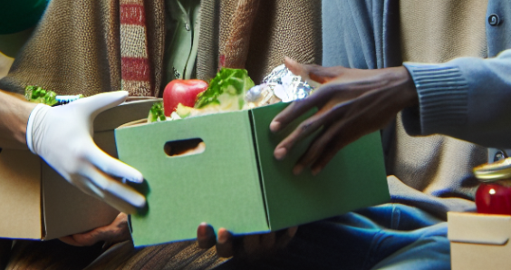
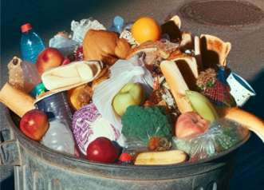

Voedselbanken geven kosteloos verkregen voedsel aan mensen in Nederland die op dit moment tijdelijk financiële moeilijkheden ondervinden.
Dit wordt mogelijk gemaakt door een team van vrijwilligers, die we liever beschouwen als onbetaalde experts. Bovendien streven we ernaar om voedselverspilling tegen te gaan door het inzamelen en uitdelen van voedsel.
In Nederland leven meer dan een miljoen mensen onder de grens van financiële stabiliteit. De voedselbanken ondersteunen diegenen die momenteel in financiële moeilijkheden verkeren door hen tijdelijk van voedselhulp te voorzien. Om voldoende voedsel voor onze cliënten te waarborgen, bundelen wij krachten met bedrijven, organisaties, gemeenten en particulieren. Op deze manier dragen we gezamenlijk bij aan de bestrijding van armoede, het verminderen van voedseloverschotten en het verminderen van de impact op het milieu. Bovendien streven we ernaar om voedselverspilling tegen te gaan door het inzamelen en uitdelen van voedsel.
Om de zelfstandigheid van onze cliënten te vergroten, werken we samen met lokale instanties die hen ondersteunen bij het herwinnen van hun onafhankelijkheid. Het is namelijk ons streven dat voedselhulp altijd van tijdelijke aard is.
Bij vragen, zoek gerust contact op met een van onze medewerkers
Email: brood@nodig.com